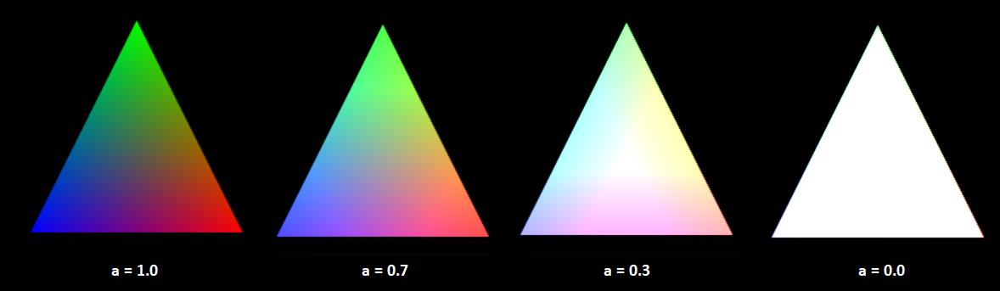
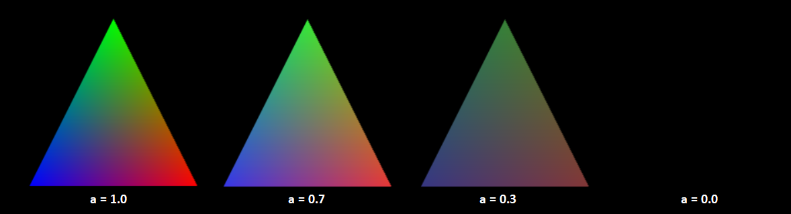
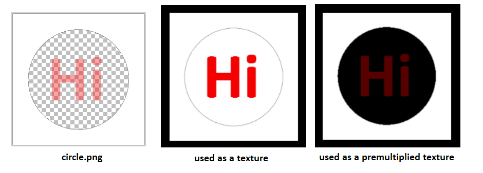
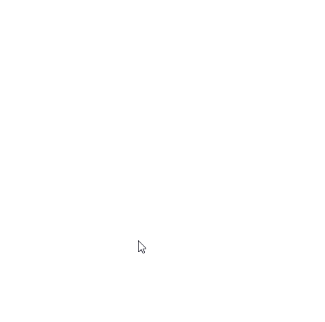
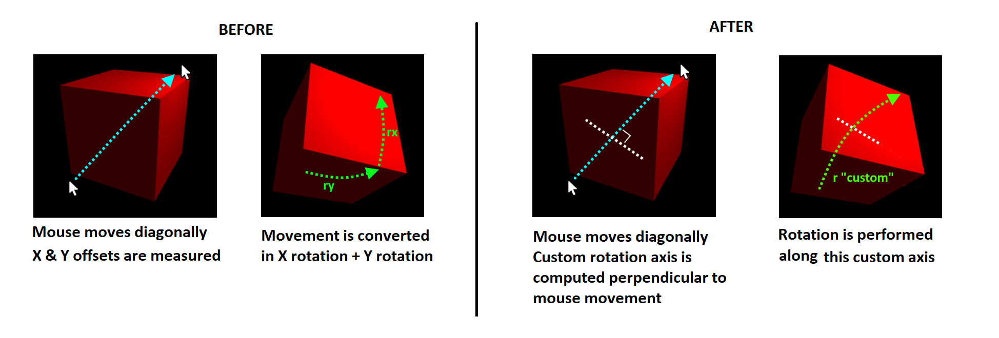
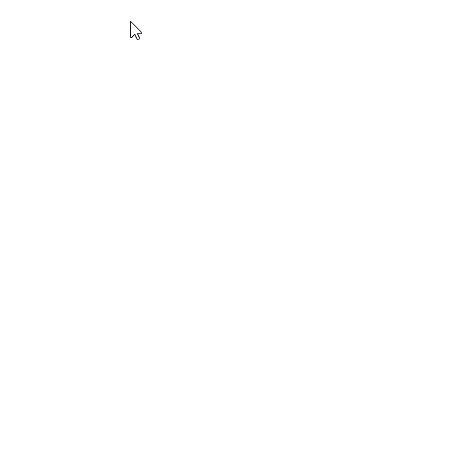
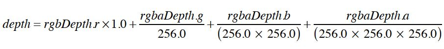
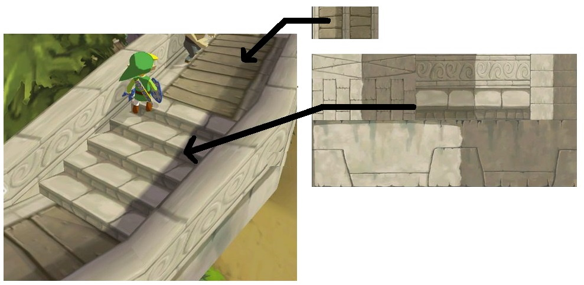
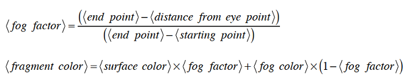
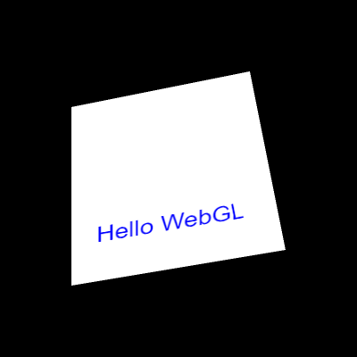

WebGL guide (part 2/2): Advanced techniques
June 2020 - WIP
Introduction
Welcome to the second part of my WebGL guide!
I had to split the guide in two parts to embed all my demos... indeed, browsers tend to lose their WebGL contexts after 16 occurrences.
Context loss can also happen when the computer goes into hibernation mode, and can be fixed by adding these two event listeners in your program:
canvas.onwebglcontextlost = e => e.preventDefault(); // make the canvas trigger onwebglcontextrestored if the context is lost
canvas.webglcontextrestored = e => { /* re-init shader, program, buffers, textures and clear color here */ }Anyway, this second part will show a bunch of techniques built upon the basics shown in part 1, that I recommend reading first.
In this page, to make things easier to read, I will only show the relevant lines of codes involved to produce each effect. A link to a complete, editable demo will be available when necessary.
Keep in mind that most of the advanced visual effects presented here rely on the same basic principles shown in the previous parts (messing with light rays, angles, distances, sizes, reflections, projections and colors, in order to make the computer draw what we want, pixel per pixel).
This also means that you can invent your own tricks! (this guide is as complete as possible, but not exhaustive).
I'd like to thank again all the people and resources that helped me write this guide, and all the readers who came here thanks to JS newsletters, social networks and word of mouth.
Let's get started!
Table of contents
Advanced 3D rendering
- Transparency and alpha blending
- Mouse interactivity
- Framebuffers and renderbuffers
- Instanced geometry
Advanced coloring / texturing
- Animate, transform and wrap textures
- Mip mapping
- Reflexions and environment mapping
- Normal / Height / Parallax / Bump mapping
- Fresnel
- Matcaps / lit spheres
- Cel-shading / ramp textures
Advanced lighting
Advanced display
Load external 3D models
Advanced shader manipulation
Interesting subjects to study next
Advanced 3D rendering
Transparency and alpha blending
There are many ways to handle transparency in a WebGL program:
- First, remember that the HTML <canvas> is transparent by default, and can absolutely stay like that if it doesn't get a CSS background or a clear color (as we saw in part 1).
- The fragment shader can set a rgba value for each pixel it renders. By default, when lowering the "a", it will blend with the canvas's background (not its clear color):

- In order to blend a triangle it with the clear color (or the elements behind it), you need to call two new functions:
gl.enable(gl.BLEND); // enable alpha blending gl.blendFunc(gl.SRC_ALPHA, gl.ONE_MINUS_SRC_ALPHA); // specify how alpha must blend: fragment color * alpha + clear color * (1 - alpha) - If you want to use a PNG image with transparency as a texture, many solutions are possible, but the most convenient one is to enable alpha premultiplication when loading the image:
gl.pixelStorei(gl.UNPACK_PREMULTIPLY_ALPHA_WEBGL, true);
If premultiplication is not enabled, the transparent pixels will become white and the semi-transparent ones will become fully opaque:
 - Finally, you may want to give some transparency to entire objects. To do that, you can assign a RGBA color to each vertex, with A < 1.0.
Then, enable WegGL's alpha blending with
andgl.enable(gl.BLEND);
as we did earlier.gl.blendFunc(gl.SRC_ALPHA, gl.ONE_MINUS_SRC_ALPHA);
If you're drawing an object (like a cube) with transparency, you also need to disable gl.DEPTH_TEST, so that the front faces don't block the other faces from being drawn
If your scene contains a mix of opaque and transparent objects, you'll need to draw all your opaque objects first, then disable depth test with
, then draw all your objects with transparency, then re-enable depth test withgl.disable(gl.DEPTH_TEST);
for the next frame.gl.enable(gl.DEPTH_TEST);
Mouse interactivity
Technique 1: Select a 3D item with the mouse
Here's the simple (and a bit hacky) way:
- When the canvas is clicked, color each object in the scene with a different flat color (for example, a different shade of red).
- Then read the pixel color where the mouse is clicked and find the corresponding object.
- Then, immediately repaint every object with their correct color / texture / lighting so that the hack doesn't have time to appear on screen.
|
Click the cube to trigger an alert Click a face of the cube to paint it in white |
A less hacky way consists in computing the intersection between the vector starting from the mouse and the triangles in your scene to see which one is clicked (more info on 3Dkingdoms).
Technique 2: rotate a cube with the mouse (easy)
- Detect when the mouse is clicked.
- Update the cube's Y angle when the mouse is clicked and moves horizontally.
- Update the cube's X angle when the mouse is clicked and moves vertically.
Technique 3: rotate a cube with the mouse (advanced)
In the demo above, you may have remarked that the cube rotation is wrong when its vertical angle is too big.
Indeed, When the vertical angle is, for example, 180 degrees, all the cube will be upside-down, and the horizontal rotation performed first will be inversed compared to the mouse's direction:

This problem is present in most 3D tutorials and libraries out there, and is generally "fixed" (hidden) by preventing the vertical angle to go beyond 45 degrees.
Fortunately, a real solution exists! Kevin Chapelier implemented it in his sphere demo and explained it to me:
First, every time the cube rotates, instead of rotating along the X axis then along the Y axis, make it rotate along a specifix axis, perpendicular to mouse movement:

So far, we didn't solve anything... but introducing this custom rotation axis is very important.
Indeed, it is possible to inverse the rotation that has been made by the cube so far, and apply this inverse transformation to our custom axis.
This may sound a bit strange, but it does something pretty awesome:
it virtually cancels all the previous rotations made along this axis, in order to perform the next bit of rotation as if the cube had never rotated before:
As a result, the cube can now follow the mouse in every direction:

New functions added in matrix.js:
// Create a matrix representing a rotation around an arbitrary axis [x, y, z]
fromRotation = (axis, angle) => {
var x = axis[0], y = axis[1], z = axis[2];
var len = Math.hypot(x, y, z);
var s, c, t;
if (len == 0) return null;
len = 1 / len;
x *= len;
y *= len;
z *= len;
s = Math.sin(angle);
c = Math.cos(angle);
t = 1 - c;
return new Float32Array([
x * x * t + c, y * x * t + z * s, z * x * t - y * s, 0,
x * y * t - z * s, y * y * t + c, z * y * t + x * s, 0,
x * z * t + y * s, y * z * t - x * s, z * z * t + c, 0,
0, 0, 0, 1
]);
};
// Apply a matrix transformation to a custom axis
transformMat4 = (a, m) => {
let x = a[0],
y = a[1],
z = a[2];
let w = (m[3] * x + m[7] * y + m[11] * z + m[15])|| 1.0;
return new Float32Array([
(m[0] * x + m[4] * y + m[8] * z + m[12]) / w,
(m[1] * x + m[5] * y + m[9] * z + m[13]) / w,
(m[2] * x + m[6] * y + m[10] * z + m[14]) / w
]);
}Framebuffers and renderbuffers
Until now, we've used the color and depth buffers to draw 3D content on the WebGL canvas. It is also possible to bypass this default target to perform offscreen rendering.
This can be done by creating a framebuffer object, which, in turn, writes the image data in a texture object, and the depth data in a renderbuffer object.
The texture object can be used as if it was loaded from an image file, and the renderbuffer object can be used to cast shadows, as we'll see in the following chapters.

Here's an example of 3D cube rendered as a texture and applied on a quad.
You can see that only one program and one pair of shaders is present in the code,
that's because they're generic enough to be used by both the textured cube and the textured quad, even though each of them uses different meshes, uv and mvp matrices.
However, it's totally possible to write two programs and two pairs of shaders (one for the offscreen texture, and another for the canvas) !
Instanced geometry
todo
Advanced coloring / texturing
Animate, transform and wrap texturess
todo (more info here)
Mip mapping
todo
Reflexions and environment mapping
todo (more info here)
Normal / Height / Parallax / Bump mapping
Fresnel
todo
Matcaps / lit spheres
todo
Cel-shading / ramp textures
todo
Advanced lighting
Multiple light sources
todo (more info here)
Shadows!
Displaying shadows consists in rendering with a darker color the objects that are hidden from the light source by another object.
It's a bit tricky because it involves many concepts introduced in the previous chapters (shading, depth buffer, multiple shaders, ...)
- First, you need to consider a virtual camera placed at the same position as the light source. Everything you can see will be in the light, everything you can not see will be in the shadow.
- To implement that, you need a first pair of shaders that computes the distances between the light source and the scene's fragments (by computing a depth buffer from this virtual camera),
and a second pair of shaders that uses these results to draw the scene from the "real" camera position. - To pass this demth buffer between the two pairs of shaders, a texture can be used. In this context, it's called a shadow map.
- For now, the depth will be stored in the R value of the shadow map's RGBA pixels, which is a 8 bit integer.
- All the depths between the near and far clipping planes are normalized (placed in the range [0:1]), and will be multiplied by 256 to be stored in a 8-bit value.
- These shadow map's depth values will be compared to real-world distances, so a small offset a bit higher than 1/256 (0.005) is added to avoid rounding errors's Mach bands.
- In this example, fragments that are not the closest to the light source (i.e. in the shadow) will be drawn with 70% of their RGB colors instead of 100%.
{kind=link}
|
- This 8-bit shadow only works for small scenes where the light is close to the scene's objects.
- A solution consists in using the four RGBA components of the texture map to store the distance, instead of just R, for a 32-bit precision:
 - The rounding offset can now be lowered to 0.0015 (a bit above 1/(232))
|
360° shadows
todo
Penumbra and soft shadows
todo
Baked lighting
Baked lighting was an optimization used in early 3D games, where real-time computations were very CPU-intensive.
The lights, shadings and shadows were often precomputed or drawn by artists during the game development and displayed as textures to save resources.
Famous example from Zelda Wind Waker on Gamecube:

Advanced display
Fog
- Fog will take effect linearly between a near point (where the fog is fully transparent) and a far point (where the fog is fully opaque).
- The vertex shader must know the position of the camera to compute a varying distance between the camera and each vertex.
- Using this varying distance, the fragment shader knows the distance between the camera and each fragment.

Fortunately, the native GLSL methods distance(), clamp() and mix() simplify the shader's implementation. - The WebGL canvas context's clear color is equal to the fog's color when it's fully opaque.
|
To simplify, you can also use v_dist = gl_Position.w; in the vertex shader, as it is a nice approximation of the distance between the camera and the vertex.
(see the book's "fog_w" demo for more info)
Text
WebGL can't display text natively on screen.
We have to cheat a little if we want to display text in our scene...
1) Superpose a HTML div over the WebGL canvas
This approach is recommended if you want to display fixed informations on top of the scene (like a game's HUD).
However, if you want to align the text to a specific point in the scene (like a vertex), the div's position can be computed in JavaScript.
Some examples are available on Webglfundamentals.
2) Place text inside the scene
In order to have text appear in the scene and be translated, rotated, scaled, overlap or be overlapped by other elements, it needs to be put into a texture, and applied on a polygon.
To do that, you can either create a texture with all the alphabet and make WebGL draw the text letter by letter, or simply draw the text on an image or a 2D canvas and use it as a texture:
|  (click for full demo) |
NB: other approaches are available on CSS-tricks and WebGLFundamentals here and here.
Particles
todo
Multiple passes and post-processing
todo
Load external 3D models
.obj / .mtl files

- Wavefront OBJ is a popular and simple 3D model file format, it contains text and can be exported by free tools like Blender.
- It contains the definitions of vertices, vertex normals, texture UV coordinates for each vertex, and faces organized in objects and groups.
- A companion MTL file is used to define the material properties of each object or group (color, opacity, texture, ...).
- Below are described the most important features of these file formats, and all the traps and tricks I found while writing my own parser.
OBJ file content:
# List of geometric vertices (x, y, z, [w], [r], [g], [b]). # w is optional and defaults to 1.0. r,g,b are optional and their values are between 0 and 1. # Some 3D softwares export the vertices RGB colors after the x/y/z or x/y/z/w coordinates, # so if a line contains 6 floats, it's x/y/z/r/g/b. If it contains 7, it's x/y/z/w/r/g/b. # Note that this is the only way to declare colors per-vertex, since materials can only be applied to entire polygons. # It's not guaranteed that all the lines have the same number of arguments. # Sometimes, due to exporting errors, all the vertices are offseted (ex: the object is placed too high and every Y value is > 10). # Depending on your needs, it may be interesting to bring the first vertex back to [0,0,0] and offset all the other vertices accordingly. v 0.123 0.234 0.345 v 0.123 0.234 0.345 1.0 v 0.123 0.234 0.345 0.456 0.567 0.678 v 0.123 0.234 0.345 1.0 0.456 0.567 0.678 v ... # List of texture coordinates (u, [v], [w]), between 0 and 1. v and w are optional and default to 0. # v is usually set (without it, 2D textures wouldn't work), but w is specific to advanced rendering techniques and almost never used. # If none of the file's objects are textured, there won't be any "vt" lines. vt 0.500 1 vt ... # List of normals (x, y, z). Some 3D editors don't normalize them, so make sure to always call normalize() in your shaders. # If they're implicit (not present in the file), and if you want to light/shade your model, you'll need to compute them like this: # for a triangle A, B, C (in counterclockwise order), the face normal is equal to: # vn = AB . BC = [yAB*zBC – zAB*yBC, zAB*xBC – xAB*zBC, xAB*yBC – yAB*xBC] vn 0.707 0.000 0.707 vn ... # Polygonal faces (triangles, quads, and polygons with more than 4 sides can be mixed here). # Allowed forms: # - "vertex" indices # - "vertex/texture" indices # - "vertex/texture/normal" indices # - "vertex//normal" indices # Warning! Indices start at 1, not 0. The values need to be decremented to be used in a WebGL index buffer. # Warning #2! in WebGL you can't have 3 sets of data and 3 sets of indices, so when parsing mixed indices (in the form a/b/c d/e/f g/h/i), # you'll need to reorganize the data in either 3 non-indexed buffers, or in 3 buffers using the same indices. # Also, to be displayed with WebGL, quads and other polygons (anything with more than 3 sides) must be converted to triangles: # (For n-edge polygons, each triangle is of the form [0, i, i+1] for i=1..n-2. See this StackOverflow post for more info). # The vertices order is counter-clockwise by default, which helps recomputing implicit normals properly. f 1 2 3 f 1 2 3 4 f 3/1 4/2 5/3 f 6/4/1 3/5/3 7/6/5 f 7//1 8//2 9//3 f ... # Faces can be gathered in objects and groups (both are optional). # Objects can contain groups, but groups can also exist without parent object. # It may be a good idea to always force the creation of a default object and group when parsing an OBJ file, for consistency. # Everything that follows an object definition belongs to this object until a new object starts. # Everything that follows a group definition belongs to this group until a new object or group starts. # Each group generally requires a new pair of shaders to be rendered, as they generally use different colors, textures, shininess, transparency, etc) o myObject g myGroup1 f 1 2 3 ... g myGroup2 f 4 5 6 ... # Smooth shading can be enabled or disabled per object or group. # When enabled, shading may be computed per fragment. When disabled, it may be computed per vertex or per face. # It's enabled by default for every object, and inherited by default for every group. # 1 / on, and 0 / off are equivalent. # If the value of s changes inside a group, a new group should be created, to compute normals separately. # 's' can also be used by some 3D softwares to define smoothing groups, with numbers > 0. # All the groups with the same value should be smoothed together when the vertex normals are recomputed. # It's quite rare though, so you can consider that anything different than '0' or 'off' is 'on'. s 1 s on s 0 s off # Load a material file and use one or many materials defined inside it. # Many 'mtllib' lines may exist in the same obj file (in general there's only one). # If a material has the same name in different mtl files, the last one loaded overwrites previous occurrences. # If the material changes within a group, a new group should be created, so WebGL can render both separately. mtllib material.mtl usemtl material1 # all the following elements will use material1 until another usemtl is reached. ... usemtl material2 # all the following elements will use material2 until another usemtl is reached. ...
MTL file content:
# Define a material named material1. newmtl material1 # All the following properties are optional. Most materials only have one color or one texture map. # Whether it's called color or lighting, the implementation is the same. # Ambient color (RGB, each channel between 0 and 1). Ka 1.000 1.000 1.000 # Diffuse color. Kd 1.000 1.000 1.000 # Specular color + specular exponent. Ks 0.000 0.000 0.000 # black (off) Ns 10.000 # shininess, between 0 and 1000 # Transparency (or its opposite, "dissolving": d = 1 - Tr). Only d is used in general, but both should be supported. d 0.9 Tr 0.1 # Illumination model (more info on Wikipedia). illum 0 # Color on and Ambient off illum 1 # Color on and Ambient on illum 2 # Specular highlight on ... # The other models are not covered here (raytracing, etc) # Texture map (more info on Wikipedia) map_Ka ambient.png # ambient texture map_Kd diffuse.png # diffuse texture, very often only this one is set, sometimes both are set but use the same file map_Ks specular.png # specular texture ...
Obj and mtl files may contain other statements not detailed here, see OBJ specs and MTL specs
When parsed, all the v, ft, vn, f floats should be concatenated in big Float32Arrays, as it's the format in which WebGL expects to receive data buffers.
You can see my mini OBJ/MTL parser/viewer on Github. It supports all the features listed above.
(TODO: explain shaded textures)
.fbx files
todo
.gltf / .glb files
todo
Others (.ply, .prwm...)
todo
Advanced shader manipulation
Using multiple shaders
- If your scene contains many objects rendered differently (colored, textured, alpha, etc), you may want to use many shaders instead of a single, long shader
- You need to create a program for each shader, and when rendering a frame, switch between them using gl.useProgram(...)
|
Build shaders
todo
Interesting subjects to study next
3D physics
todo
Tessellation and decimation
todo
Interpolation, animation and rigging
todo
VR
todo
Field of view
todo
Other WebGL features
todo
Raycasting and distance fields
todo
Raytracing and Physics Based Rendering
todo
NURBS
todo
WebGPU
todo
WebGL and Gamedev
todo
Use WebGL to compute stuff
todo
Visualizing the camera
todo (more info here)